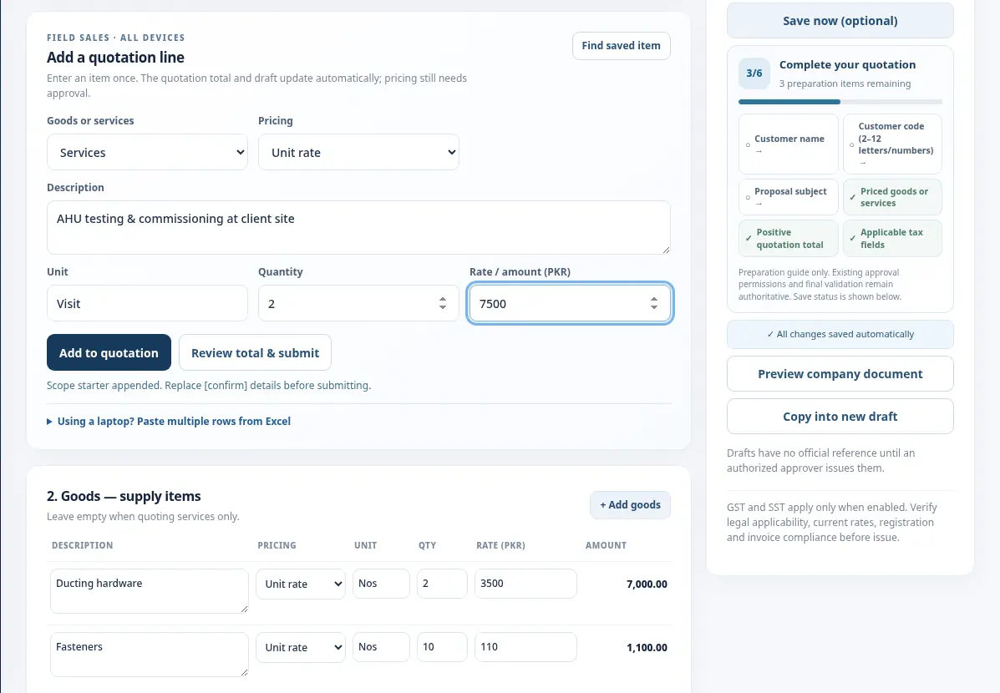
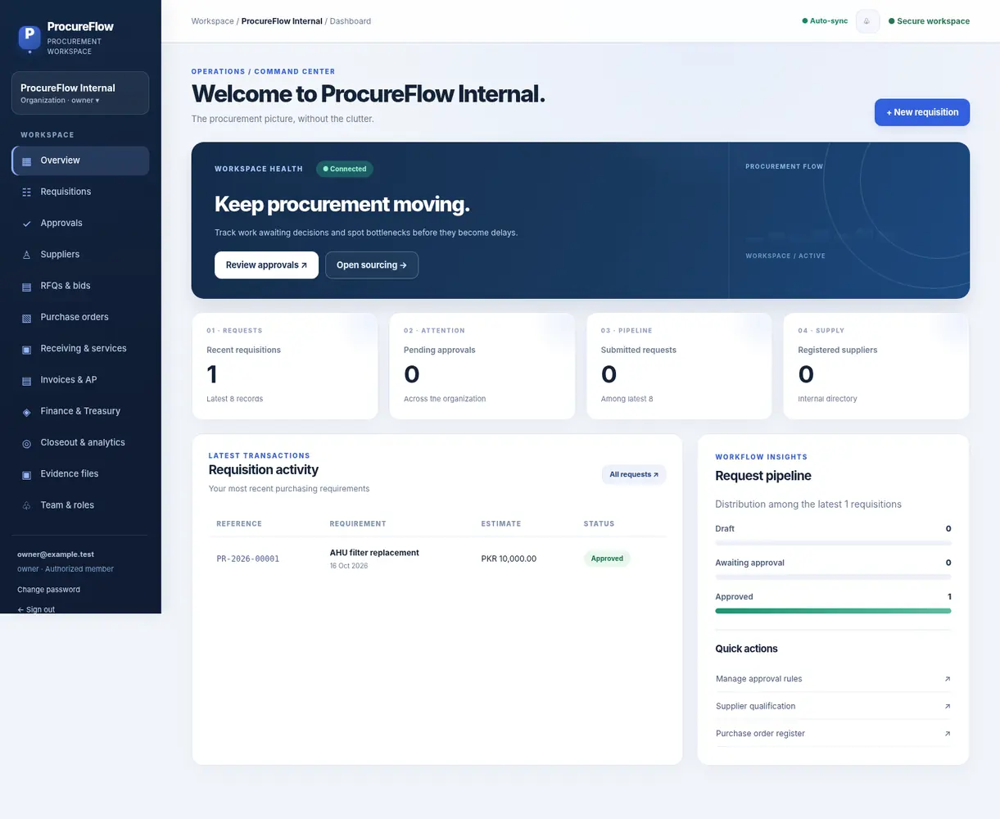
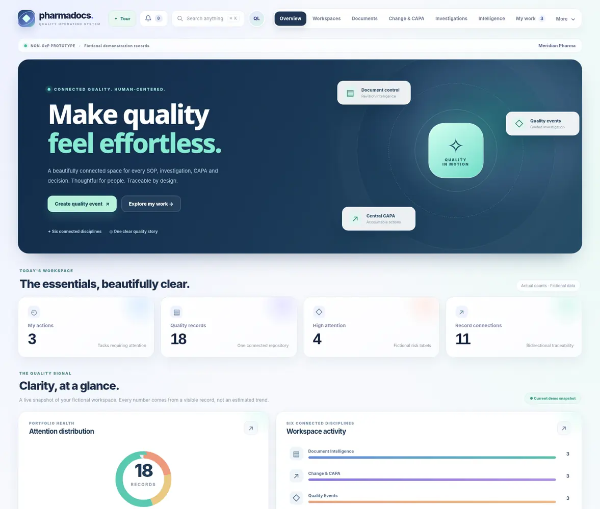
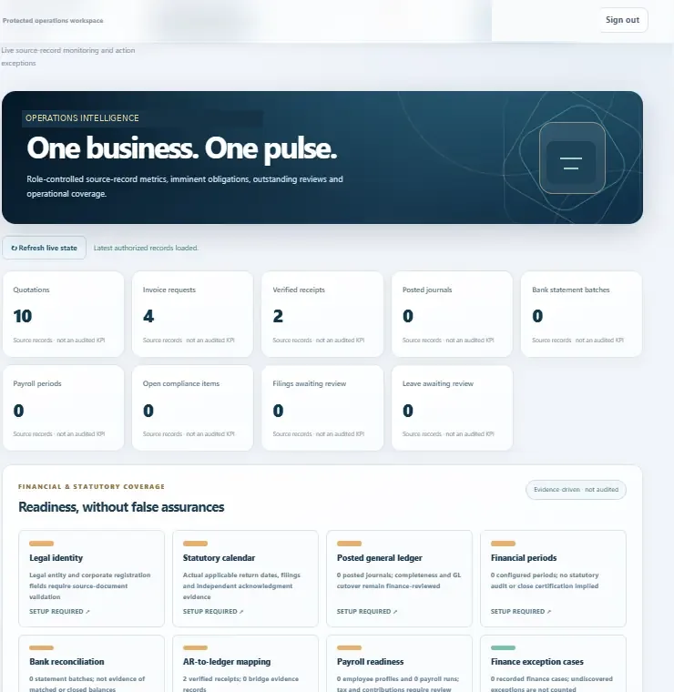
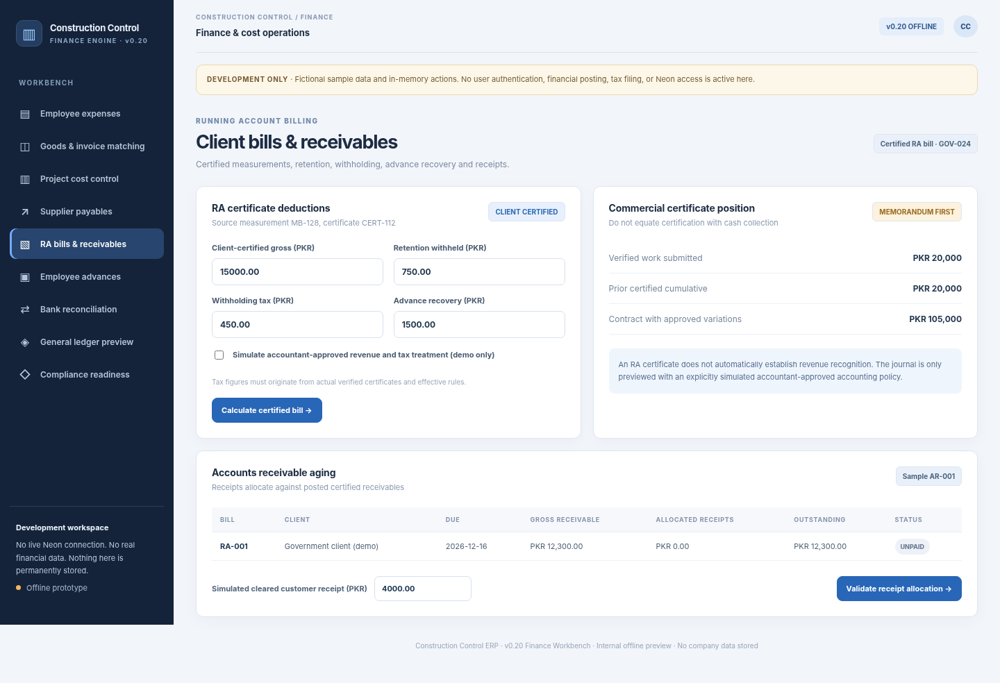

You built it to lead it.
Not chase it.
The quotation you keep asking about. The purchase that's stuck. The project you can't leave unattended. Find the CoreDraft system that helps take that uncertainty off your plate—and explore the real software behind it.
What's keeping you
up to date at all hours?
Start with the question you keep asking your team. We'll show you where the answer belongs.

01 / 05QuoteDesk
No more wondering where the quotation went.
A structured commercial workflow for quotation, approval, customer outcomes, invoicing and closure.

02 / 05ProcureFlow
Know what's holding up the purchase.
Connect requisitions, delegated approvals, suppliers, purchase orders and purchasing follow-through.

03 / 05PharmaDocs
Know where your quality work stands.
Bring documents, training, quality events and management oversight into a coherent quality workspace.

04 / 05People & Compliance
Make month-end feel manageable again.
Structure employee records, payroll periods, controlled changes and company-level obligations.

05 / 05Construction Control
You can't be everywhere. Know what matters.
Track site progress, project costs, billing, receivables and supporting evidence in a shared operating view.
Know the problem.
Then choose the software.
Our free guides cover quotation approvals, procurement handoffs, construction costs and pharmaceutical document control.
Ready for a business
that gives you breathing room?
Tell us what keeps pulling you into the details. We'll start with that problem and show you the workflow that could help.